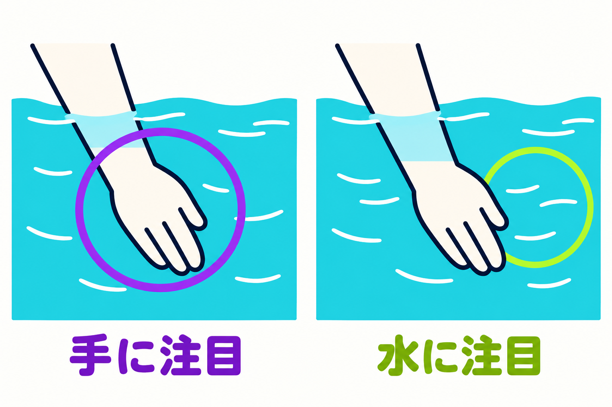
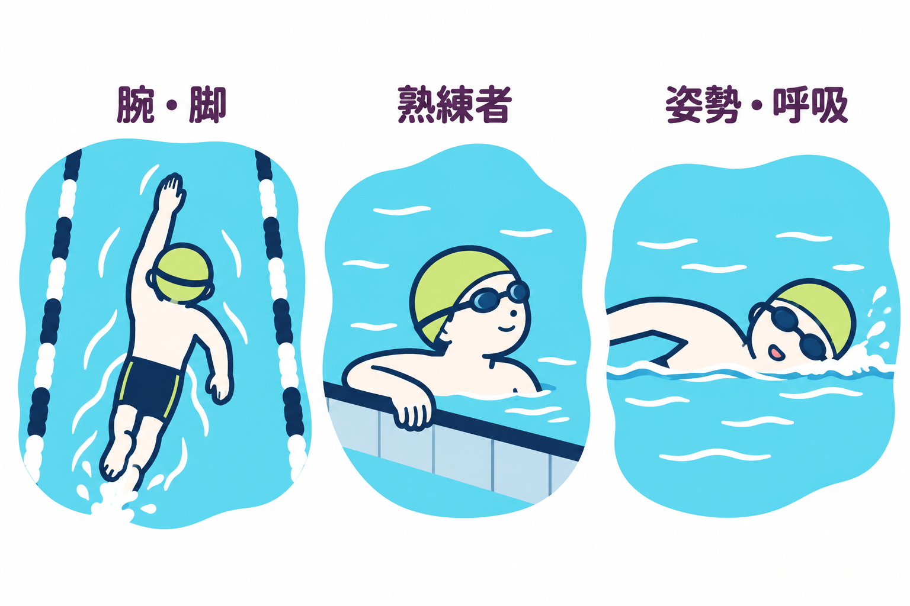
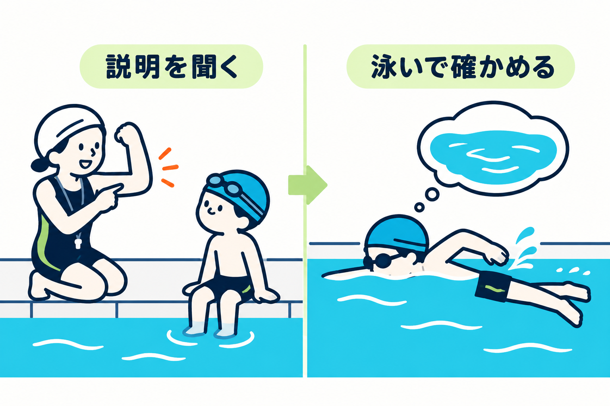
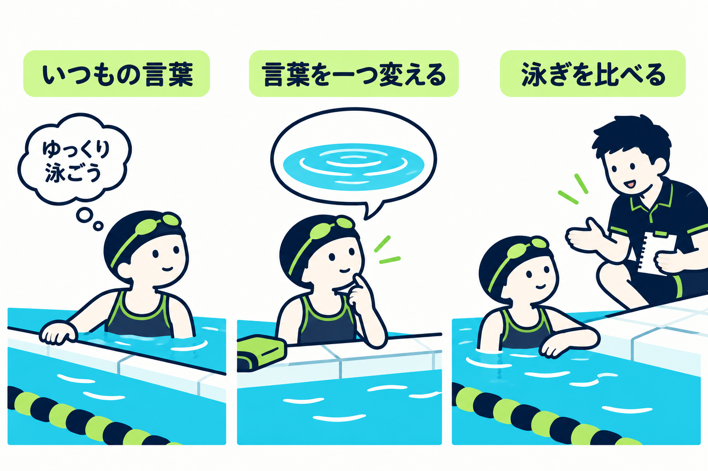

SWIMMING RESEARCH / 14
泳ぐとき、どこに意識を向ける？
2026年10月31日 · 注意の向け方と言葉

「肘を曲げて、手を後ろへ。足首は伸ばして……」。一つずつは分かるのに、泳ぎ始めると何から考えればいいのか分からない。そんな場面では、覚えることを増やす前に、泳いでいる間の言葉を少し変える方法があります。
たとえば「手を後ろへ動かす」から「水を後ろへ送る」へ。同じ動作を目指していても、気にかける相手が手から水へ移ります。水泳の研究では、この違いで短い距離のタイムが変わった例があります。ただし、どんな泳者にも、どんな動作にも効く合言葉ではありません。
この記事で探すのは、正しい言葉を一つに決めることではなく、自分が泳ぎやすくなる手がかりです。 身体の説明を捨てずに、次の一本へ持っていく言葉を選んでみましょう。
1｜手の動きと、水への働きかけはどう違う？
手を水の中で動かす場面を想像してください。「手を後ろへ動かす」と考えると、主役は自分の手です。「水を後ろへ送る」と考えると、主役は手が働きかける水になります。後ろとは、自分が進む向きと反対、足のほうです。
たとえば、机をふくとき。「右手を横に動かそう」と考える場合と、「布でここの汚れをふこう」と考える場合では、気にかけるものが違います。これは言葉の違いをつかむためのたとえで、水泳で速くなる仕組みを証明するものではありません。
同じ動きでも、気にかける相手を変えられる

例：手を後ろへ動かす。自分の身体が主役。
例：水を後ろへ送る。動きが周囲にすることが主役。
泳ぎでも、まずは「自分の手を気にする」「手が水にすることを気にする」と分ければ十分です。研究では、前者のように身体へ向ける注意を「内的注意焦点」、後者のように動きが周囲に起こす働きへ向ける注意を「外的注意焦点」と呼びます。名前を覚えるより、今どちらを考えているかが分かれば大丈夫です。
ここでいう「向ける」は、目を向けるという意味ではありません。泳ぎながら手を見つめたり、後ろの水を振り返ったりする必要はありません。いつもの見方や呼吸を保ちながら、頭の中の短い言葉を変える話です。図の丸も見る場所ではなく、気にかける対象を示しています。
また、「水を送る」は、手をひたすら強く押す指示ではありません。水の力は手の向きや動き、身体全体の状態で変わります。この言葉だけから、正しい手の軌道や力の大きさまでは決まりません。言葉を変えることと、力いっぱい泳ぐことは別です。
「水」という単語さえ入れればよいわけでもありません。何をどうしたいのかが自分に伝わることが大切です。言葉を聞いて余計に考え込むなら、まずプールの縁など安全な場所で、指導者と意味を確かめてから泳ぎます。
2｜研究では、いつも「水に注目」が勝った？
2010年の研究は、16mの区間をクロールで泳ぐ課題を調べました。最初の実験の対象は中程度の泳力の人です。腕やキックについて、身体の動きに注意を向ける指示と、水への働きに注意を向ける指示を比較すると、水への働きに注意を向けた条件のタイムが短くなりました。別の実験では、特に注意先を指定しない条件と比べても短いタイムでした。Freudenheimら、2010
この研究では、手や脚そのものより、水へどう働きかけるかを考えた泳ぎのほうが速かった、ということです。
研究の条件が変わると、結果も変わる

対象：泳者の腕・脚の動き。
比較：身体への注意と、水への働きへの注意。
結果：水への働きの条件でタイムが短かった。
対象：熟練泳者の腕。
比較：手への注意・水への注意・通常の泳ぎ。
結果：水と通常は同程度。手への注意で遅かった。
対象：泳者の姿勢・呼吸。
比較：異なる注意先の指示。
結果：タイムの違いははっきりしなかった。
16mは、この研究で測った区間の長さです。練習の推奨距離ではありません。ここで分かるのは短い区間を泳いだときの成績の違いで、何週間も練習して技術が身についたか、長い距離を楽に泳げたかとは別の問いです。タイムが変わった理由を、特定の筋肉が緩んだためと決めることもできません。
2011年の研究で熟練者とされた泳者については、クロールの腕について三つの条件を比べました。「水を後ろへ送る」条件、「手を後ろへ動かす」条件、特に指示しない条件です。水に注意を向けた条件と、特に指示しない条件のタイムは同程度でした。一方、手の動きに注意を向けた条件では遅くなりました。Stoate・Wulf、2011
ここでは、慣れた泳ぎに「水へ」という言葉を足しても、さらに速くなったわけではありません。普段の泳ぎでうまく動けているなら、そのやり方を残す選択もできます。ただし、この短期の比較を「身体の説明はいつでも邪魔」と広げるのも行き過ぎです。
実際、姿勢や呼吸への注意を調べた別の研究では、若い成人18人が16mを泳ぎ、姿勢では「身体を水平に保つ」と「身体を水面の高さに保つ」、呼吸では「頭を横へ向けたときに呼吸」と「手が水を出るときに呼吸」という指示を比較しました。こちらでは、言葉を変えた条件の間で、タイムのはっきりした差は見つかりませんでした。「外側へ注意を向ければ、何を練習しても優れる」とは言えない結果です。差が見つからなかったからといって、二つが完全に同じだと証明できたわけでもありません。Pasettoら、2011
三つを並べると、速くなった場合も、いつもの泳ぎと同じくらいだった場合も、はっきりした差が見つからない場合もありました。言葉だけに「これなら大丈夫」という印を付けるのは、まだ早そうです。
研究ごとの違いを読むと、使える問いが変わります。「どちらが絶対に正しい？」から、「誰が、どの動きを、何のために練習する場面か？」へ。 これらの結果だけで、泳ぎ始めたばかりの子どもにも同じ効果があるとは保証できません。
3｜では、肘や手の説明は聞かなくていい？
聞かなくてよい、という話ではありません。動きを理解するための説明と、泳いでいる最中に持つ言葉は、分けて考えられます。どこが肘なのか、手をどう向けるのかが分からないまま、短い合言葉だけで解決しようとする必要はありません。
たとえば、止まっている間に指導者の説明や実演で腕の動きを確かめる。そのうえで、泳ぐ一本では「水を後ろへ送る」のような短い言葉を一つ試す。これは本記事で提案する使い分けで、上の研究がこの順序の効果を直接確かめたわけではありません。
説明で理解し、泳ぐときは一つ試す

- STEP 01止まっている間に理解する
肘や手の意味が分からなければ、説明や実演で確認する。
- STEP 02泳ぐ一本では短い言葉を選ぶ
身体の説明も土台にして、気にかける対象を一つ決める。
- STEP 03伝わり方を確かめる
意味が分からない、力むときは慣れた泳ぎに戻して相談する。
子どもに伝える場合も、大人が「分かりやすい」と感じた言葉が、その子に同じように伝わるとは限りません。「今の言葉だと、何をすると思った？」と安全な場所で聞けば、意味のずれに気づくきっかけになります。水を激しくたたくと思っていたら、強さを増やす話ではないことを説明し直します。
一度に肘、手、肩、足、呼吸の全部を変えると、どの言葉が役立ったのかを比べにくくなります。今回は腕の動きを見たいなら、呼吸の回数やキックを同時に変えない。先に身体の説明が必要なら説明に戻る。言葉を減らすことは、理解する過程を省くことではありません。
新しい言葉で肩に力が入る、息継ぎが慌ただしくなる、何をするか迷って止まるなら、いったん慣れた泳ぎに戻して構いません。「研究で良いとされたから続ける」よりも、自分の動きと負担を確かめることを優先します。
4｜次の一本に、持っていく言葉を一つ選ぶ
次回は、いつもの泳ぎと言葉を一つ変えた泳ぎを比べてみます。これは編集上の観察案です。研究と同じ効果を得るための実験手順ではありません。自分で余裕をもって泳げる距離と速さで、施設のルールと周囲の泳者を優先します。子どもは指導者などの見守りのもとで行います。
最初に、何を比べるか決めます。たとえばクロールの腕なら、普段の考え方で泳いでから、休んで呼吸を整え、次は「水を後ろへ送る」を一つだけ試します。普段からその言葉でうまく泳げている人が、わざわざ身体の動きに注意を変える必要はありません。新しい言葉を足さずに、今のやり方を確かめるだけでもよいのです。
普段を基準に、言葉を一つだけ比べる

- 1いつもの言葉で泳ぐ
自分が余裕をもって泳げる距離と速さにする。
- 2休んでから、一つ変えて泳ぐ
同じ距離・泳法で比較。普段からうまくいく言葉は変えなくてよい。
- 3タイムと負担を分けて見る
速さだけでなく呼吸・力み・迷いを振り返る。違いは別の機会にも確かめる。
この観察でいちばん知りたいのは、速くなったかを証明することではなく、無理なく泳げる範囲で言葉の伝わりやすさを比べることです。比較するときは、同じ距離、同じ泳法、どちらも無理のない泳ぎ方にそろえます。タイムを測れるなら同じ始点と終点にそろえますが、時計がなくても「呼吸が続けられたか」「肩や腕が強く力んでいないか」「言葉の意味で迷わなかったか」は振り返れます。感覚だけで速くなったと決めず、タイムだけで泳ぎやすかったとも決めません。
一本だけよかったら、すぐ自分の正解にせず、別の機会にも確かめる候補にします。順番や疲れ、周囲の混み具合でも泳ぎは変わるからです。うまくいかなければ、慣れた言葉へ戻るか、指導者に「この言い方だと何をすればいいか迷った」と伝えます。
泳ぐときの頭の中を、指示でいっぱいにする必要はありません。今日残したいのは、身体を忘れることではなく、身体と水の関係へ言葉をつなげる選択肢です。次の一本で、何を気にかけると自分の泳ぎが分かりやすくなるか。 その答えを、小さく比べて見つけていきましょう。
参考文献と確認範囲
- Freudenheim AMほか（2010）An External Focus of Attention Results in Greater Swimming Speed. International Journal of Sports Science & Coaching, 5(4), 533–542. 発行元・DOI
- Stoate I・Wulf G（2011）Does the Attentional Focus Adopted by Swimmers Affect Their Performance? International Journal of Sports Science & Coaching, 6(1), 99–108. 発行元・DOI
- Pasetto SCほか（2011）Effects of attentional focus in the Crawl performance: Body positioning and breathing components. Brazilian Journal of Motor Behavior, 6(1), 31–36. 発行元・DOI
本記事は発行元で公開された抄録の確認範囲に基づきます。全文の細かな手順、未確認の人数、効果量は補っていません。図は概念と観察案を示す自作の説明図で、研究参加者、実測された水流や力、効果の大きさを表していません。